ラボ MCS4 - Microsoft 365 Copilot の拡張
このラボでは、Microsoft 365 Copilot Chat を Declarative エージェントで拡張する方法を学習します。これまでに、Copilot Studio でエージェントを作成し、Microsoft Teams で利用する方法を確認しました。また、Copilot Studio で作成したエージェントは Teams and Microsoft 365 Copilot チャネルのオプションを通じて、Microsoft Teams と Microsoft 365 Copilot Chat の両方を対象にできることも学びました。今回は、Microsoft 365 Copilot Chat 用の Declarative エージェントに取り組みます。
このラボで学習する内容:
- Microsoft 365 Copilot Chat 用の Declarative エージェントを作成する方法
- エージェントのカスタム アイコンを設定する方法
- エージェントのナレッジ ソースを構成する方法
- エージェントを Microsoft 365 Copilot Chat に発行する方法
- Microsoft 365 Copilot Chat 用のツールを作成する方法
Microsoft Copilot Studio で エージェントを構築したい場合は、これらの ラボ を実施してください
Exercise 1 : Microsoft 365 Copilot Chat 用エージェントの作成
この演習では、Microsoft Copilot Studio で Declarative エージェントを作成し、Microsoft 365 Copilot Chat でホストします。
Step 1: Copilot Chat 用エージェントの作成
Microsoft 365 Copilot Chat 用の Declarative エージェントを作成するには、まず 1️⃣ Copilot Studio でエージェントの一覧を表示し、2️⃣ Microsoft 365 Copilot という名前のエージェントを選択します。

Microsoft Copilot Studio の新しいセクションが開きます。そこで + Add コマンドを選択し、Microsoft 365 Copilot Chat 用の新しいエージェントを作成します。

Copilot Studio では、エージェントの目的を自然言語で入力するよう求められます。Lab MCS1 と同様に、以下のプロンプト例を使って自然言語で要件を定義できます。
You are an agent helping employees to find information about HR policies and procedures,
about how to improve their career, and about how to define learning pathways.
Copilot Studio から名前の入力を求められたら、カスタム エージェントに「Agentic HR」と付けてください。次に、以下の指示を与えてエージェントに特定のタスクや目標を設定します。
Emphasize everything that helps team building, inclusion, and the growth mindset
さらに、エージェントのトーンを「プロフェッショナル」に設定するため、以下を入力します。
It should have a professional tone
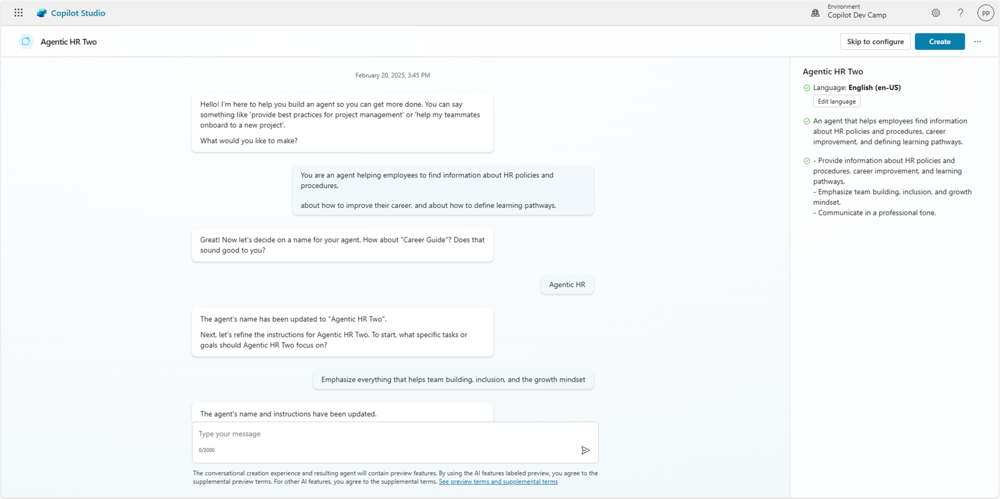
エージェントの説明が終わったら Create コマンドを選択し、実際のエージェントを作成します。あるいは Skip to configure コマンドを選択して従来の設定 UI に進むこともできます。
エージェントが作成されると設定ページが表示され、以下を構成できます。
- Details: エージェント名、アイコン、説明、instructions (system prompt) などの一般情報
- Knowledge: エージェント用のナレッジ ベースの定義
- Tools: エージェント用カスタム ツールの定義
- Additional settings: 公開 Web コンテンツを利用するかどうか
- Starter prompts: 新しいチャット開始時に Copilot Chat で表示される最大 6 件のスターター プロンプト
- Publishing details: 発行後の利用方法に関する情報
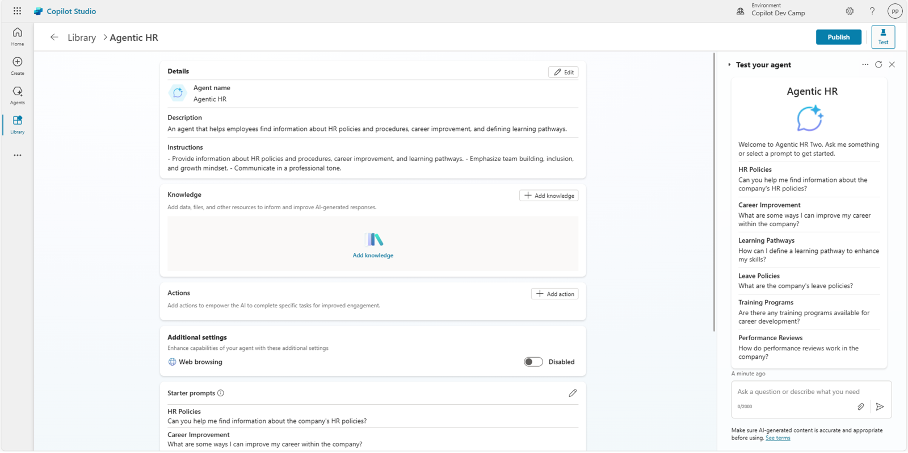
画面右側には、エージェントのプレビューが表示され、動作をテストできます。 初期セットアップが完了したので、次の手順で詳細設定を行いましょう。
Step 2: エージェント アイコンの更新
Details セクション右上の Edit コマンドを選択して詳細を編集します。
編集モードで Change icon コマンドを選択し、カスタム アイコンをアップロードして背景色を設定します。
以下のリンク先にあるアイコンを利用できます。こちら
このアイコンを使用する場合、背景色は #B9BAB5 が適しています。
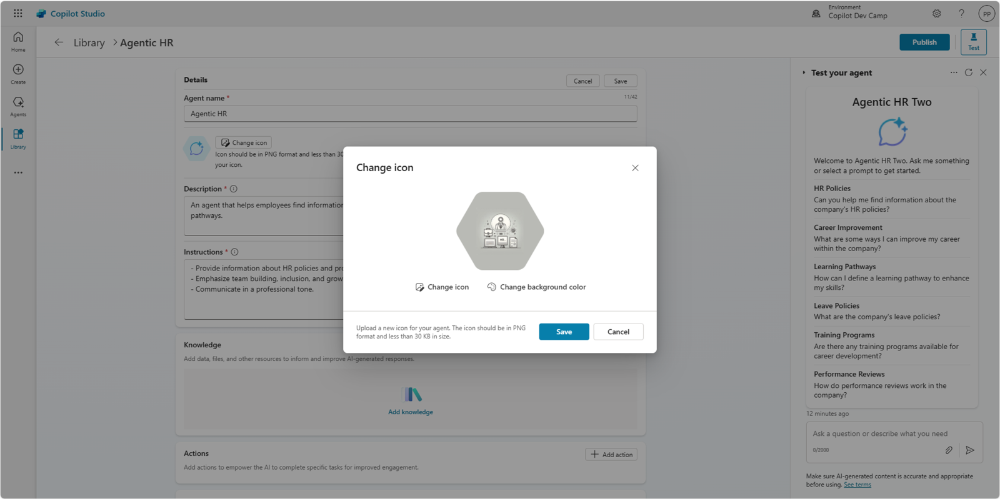
Save コマンドで新しいアイコンと背景色を保存し、続けて Save ボタンを選択してエージェントの詳細を更新します。
Step 3: エージェントへのナレッジ ベース追加
Lab MCS1 と同様に、以下のリンクから数点のファイル (Word、PowerPoint、PDF) を含む zip をダウンロードしてください。こちら
zip を解凍し、Copilot Studio と同じテナントの SharePoint Teams サイトの Documents ライブラリにアップロードします。これらのドキュメントは Microsoft 365 Copilot により生成され、エージェントの追加ナレッジとして利用します。
サイトの絶対 URL をコピーします。例: https://xyz.sharepoint.com/sites/contoso
ナレッジ ソースを追加するには Knowledge セクション右上の + Add knowledge コマンドを選択します。ダイアログでデータ ソースを選択できます。執筆時点では SharePoint を選択します。SharePoint を選択し、使用するサイトを指定します。
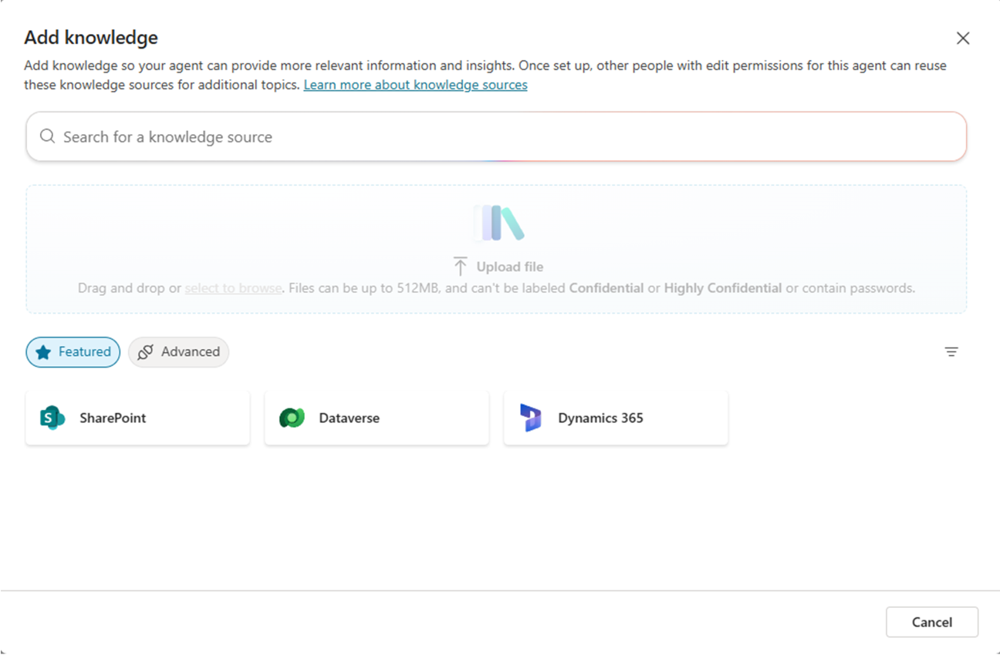
SharePoint Online サイトの URL を貼り付けるか、Browse files コマンドでサイトを参照します。URL を入力するかデータ ソースを選択すると、ナレッジ ベースの名前と説明を入力する必要があります。説明は Copilot がユーザーの意図に基づいてデータ ソースを利用する際に使用されます。
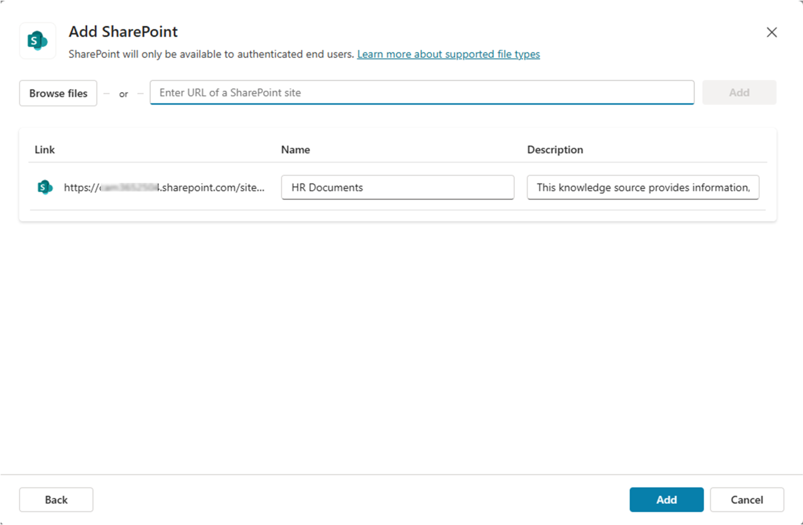
Add ボタンを選択し、ナレッジ ベースに新しいデータ ソースを追加します。
重要
Copilot Studio で SharePoint Online サイトをナレッジ ベースに設定すると、ユーザーはアクセス権を持つドキュメントのみ参照できます。セキュリティとアクセス制御は Microsoft 365 のインフラで保証され、Copilot Studio エージェントは現在のユーザーとしてドキュメントにアクセスします。
Step 4: エージェントを Microsoft 365 Copilot Chat に発行
エージェントを発行して Microsoft 365 Copilot Chat でテストします。1️⃣ 画面右上の Publish コマンドを選択し、2️⃣ エージェントの詳細を入力、最後に 3️⃣ 発行ダイアログ下部の Publish コマンドを選択します。
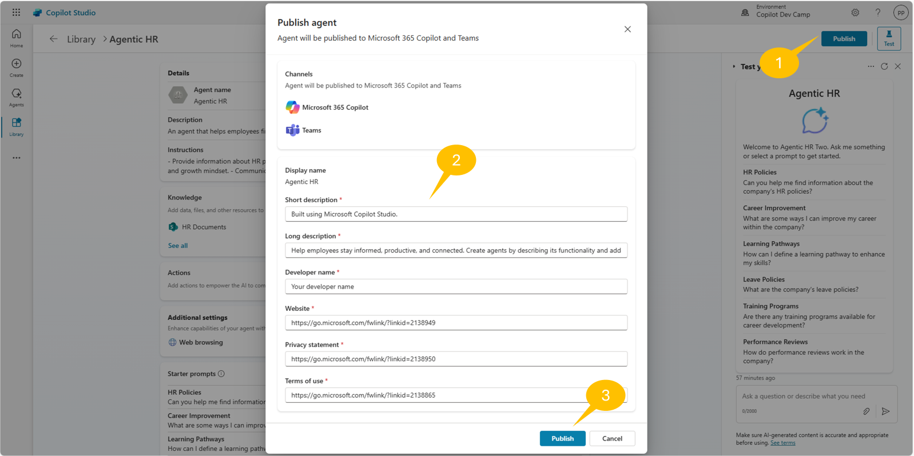
詳細は Microsoft 365 アプリ マニフェストで必須の項目です。
- Short description: 30 文字以内
- Long description: 100 文字以内
- Developer name: 32 文字以内
- Website: 2048 文字以内
- Privacy statement: 2048 文字以内
- Terms of use: 2048 文字以内
初回発行には 30〜60 秒ほどかかります。発行が完了すると、利用オプションの概要を示すダイアログが表示されます。
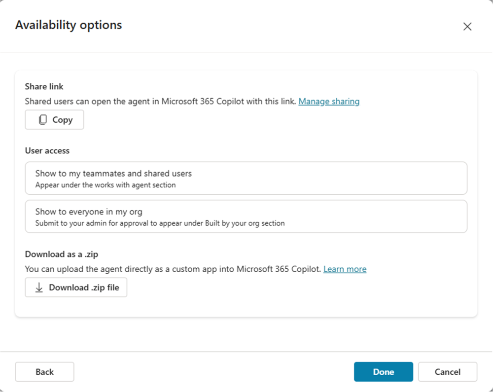
具体的には以下を選択できます。
- Copy: アプリへの直接リンクをコピー
- Show to my teammates and shared users: 選択したグループやユーザーと共有
- Show to everyone in my org: 組織全体と共有
- Download .zip file: ストア登録用の zip パッケージをダウンロード
Show to everyone in my org
組織全体に公開する場合、エージェントがリリース準備完了であり、社内基準やポリシーに準拠していることを確認してください。チームと調整し、送信後は管理者が承認または拒否するまで再送信できません。詳細は Show to the organization を参照してください。
Copy コマンドを選択し、新しいブラウザー タブで URL を開きます。 社内アプリ ストアが表示され、Add ボタンを選択してエージェントを Microsoft 365 Copilot に追加できます。
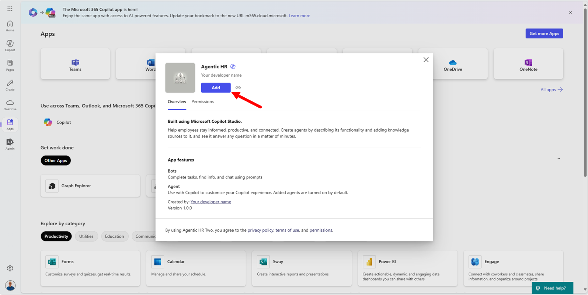
エージェントを Microsoft 365 Copilot Chat に追加すると、Copilot チャット右側のエージェント一覧に表示されます。

エージェントを選択して対話を開始します。例えば、以下のプロンプトを入力できます。
How can we hire new people in our company?
エージェントは、ナレッジ ベースにあるドキュメント Hiring Procedures.docx などを参照し、採用手続きについて詳細を回答します。
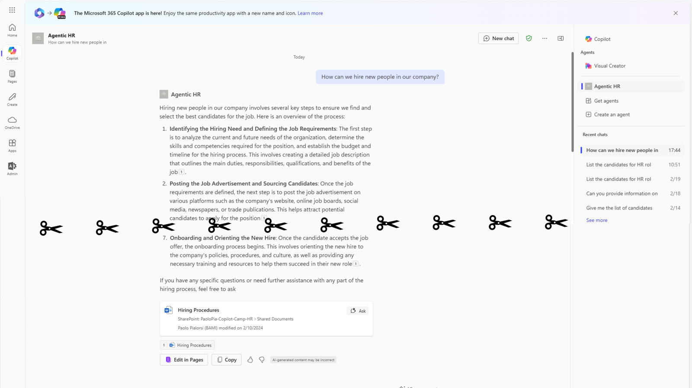
Exercise 2 : ツールの追加
この演習では、前の演習で作成したエージェントにカスタム ツールを追加します。Copilot Studio で Microsoft 365 Copilot Chat 用エージェントを作成する際、以下 4 種類のツールを追加できます。
- Prompt: 自然言語で記述した AI ツールを利用
- Custom connector: Power Platform のカスタム コネクタを利用
- REST API: 外部 REST API を利用。詳細は こちら
- Model Context Protocol: MCP サーバーとそのツールを利用
エージェント用ツール
Copilot Studio でエージェントにツールを追加する方法の詳細は Add tools to custom agents を参照してください。
本ラボでは Custom connector タイプのツールを追加し、SharePoint Online に保存された Excel スプレッドシートから候補者一覧を取得します。
Step 1: Microsoft 365 Copilot 用エージェントにツールを追加
ツールを追加するには、エージェント設定パネルの Tools セクションで + Add tool コマンドを選択します。
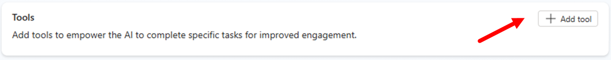
ツール作成のダイアログが表示されます。デフォルトでは Featured ツールが示され、Excel Online などへの接続が可能です。+ New tool を選択すれば前述のオプションから作成できます。
目的のツールが見つからない場合は All グループに切り替え、テキスト検索します。
今回は Excel Online (Business) の List rows present in a table を選択します。まず Connection で Create new connection を選択し、接続を作成します。

アカウントでサインインし、Excel Online (Business) へのアクセスを許可します。接続が完了すると Add to agent または Add and configure を選択できます。

ツールを追加したら、Copilot Studio のツール一覧に戻ります。作成したツールをクリックして設定を編集します。設定パネルでは以下を入力します。
- Name: ツールの説明的な名前
- Display name: 表示名
- Description: ジェネレーティブ オーケストレーションがツール使用タイミングを判断するための自然言語説明
- Inputs and outputs: 入出力パラメーター
- Response settings: ツールがリクエスト/レスポンスをどのように処理するか
設定前に候補者一覧の Excel を準備します。 サンプル ファイルをダウンロード: こちら
ファイルを Copilot Studio と同じテナントの SharePoint Teams サイトの Documents ライブラリにアップロードします。これは架空の候補者リストです。
- サイト コレクションの URL 例:
https://xyz.sharepoint.com/sites/contoso/ - ドキュメント ライブラリ名例:
Shared documents - ファイル名例:
Sample-list-of-candidates.xlsx
Copilot Studio に戻りツール設定を完了します。 設定例:
- Name: List HR candidates
- Description: List candidates for an HR role
ツール編集ダイアログで Tool name を分かりやすい名前に更新し、Inputs タブで入力引数を設定します。既定では必須入力が Identify as に User's entire response が選択されています。
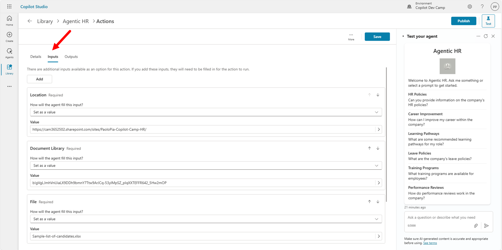
各入力引数の How will the agent fill this input? を Set as a value に切り替え、静的値を設定します。確認メッセージに同意し、すべての引数で静的値を設定します。
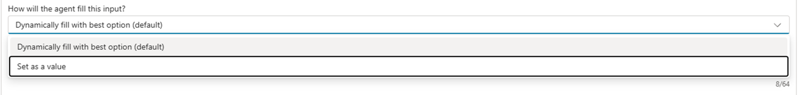
静的値は次のとおりです。
- Location:
https://xyz.sharepoint.com/sites/contoso/ - Document Library:
Shared Documents - File:
Sample-list-of-candidates.xlsx - Table:
Candidates_Table
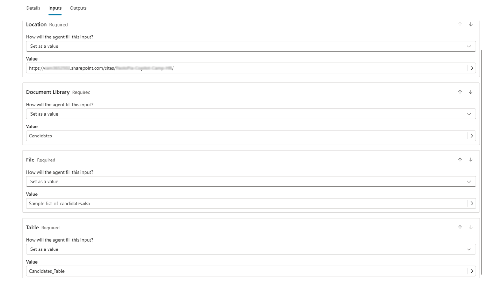
画面右上の Save を選択してツールを保存します。
Step 2: 新しいツールのテスト
エージェントを再発行し、統合テスト パネルまたは Microsoft Teams で試します。 再度 Publish を選択し、発行完了後にエージェントの直接リンクを開きます。今回は Add の代わりに Update now が表示されますので選択します。完了したら Microsoft 365 Copilot Chat を更新し、エージェントと対話します。
以下のようなプロンプトでツールを呼び出せます。
Show me the list of candidates for HR with role "HR Director" or "HR Manager"
Microsoft 365 Copilot Chat は外部 API (Excel Online) の使用許可を求めるため、Allow once を選択してテストします。
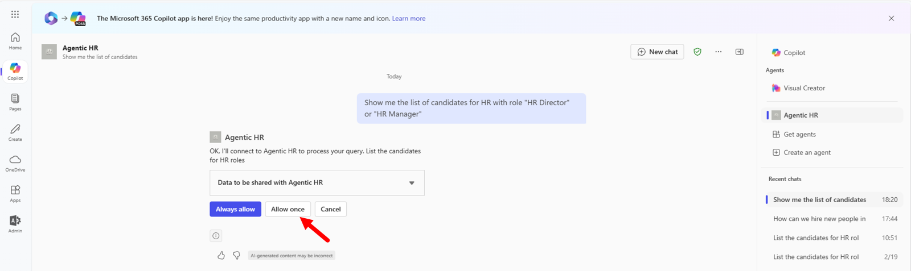
Power Platform コネクタは有効な接続を必要とするため、ユーザーに Sign in to Agentic HR が表示されます。
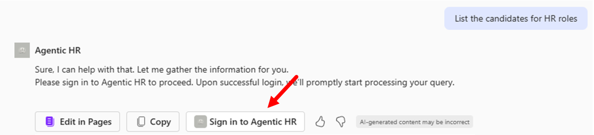
コネクタに接続し、再度プロンプトを実行すると、エージェントが Excel スプレッドシートから取得した候補者一覧を条件に合わせて返します。
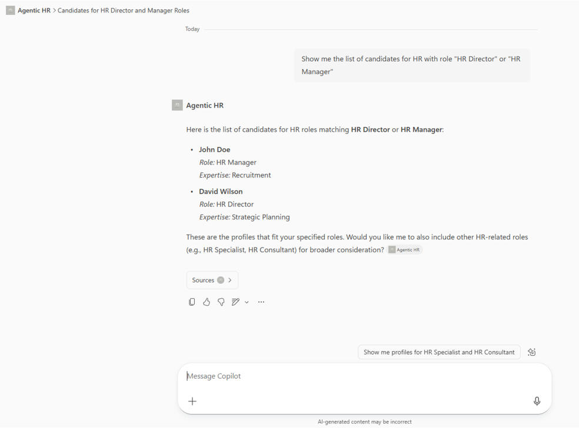
お疲れさまでした! Copilot Studio で作成した Microsoft 365 Copilot 用エージェントから外部コネクタを利用できました。
おめでとうございます！
ここから開始 して Lab MCS5 で Copilot Studio のカスタム コネクタを学習しましょう。